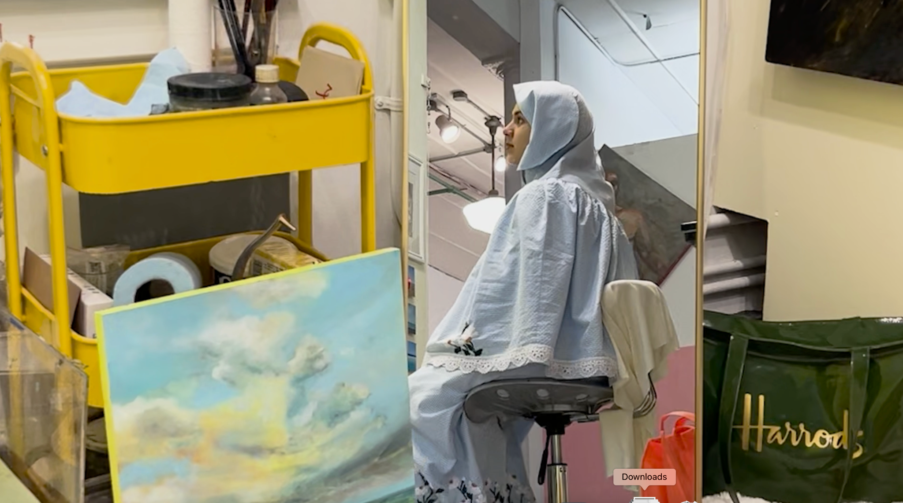

01 / 04
Fatema
26, painter
A painter from Mumbai's Bohra Muslim community who studied at the New York Academy of Art.
Partway through the two years a second clock starts, one she can't extend or negotiate. The studio, the marriage, and the work all have to make room for it.